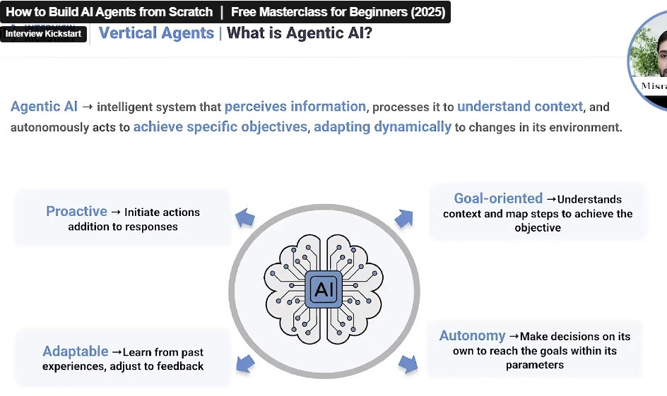
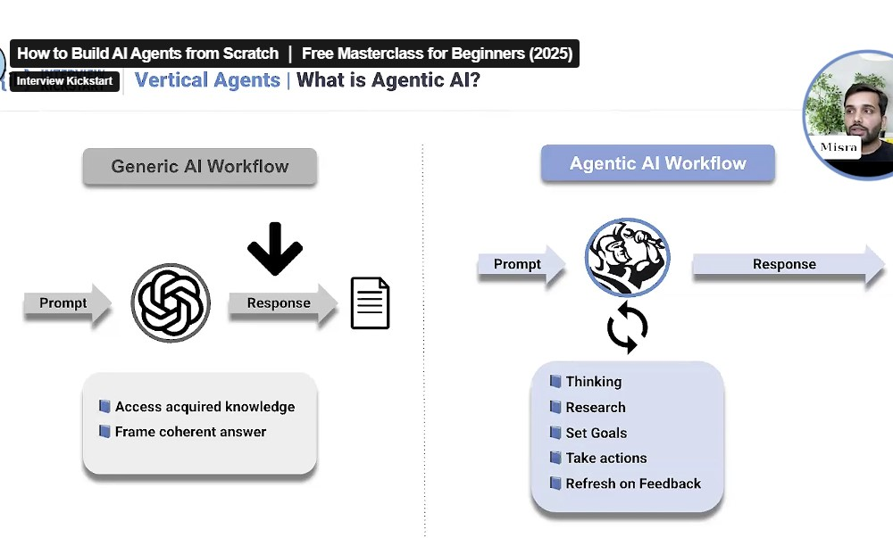
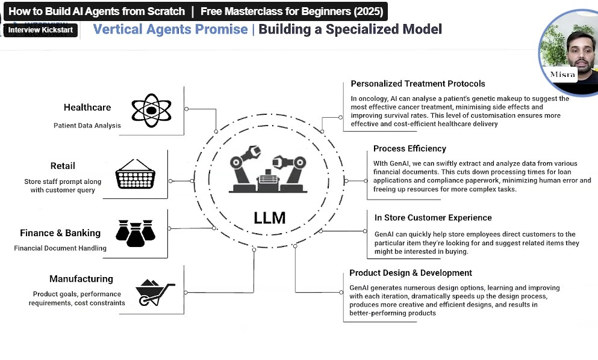
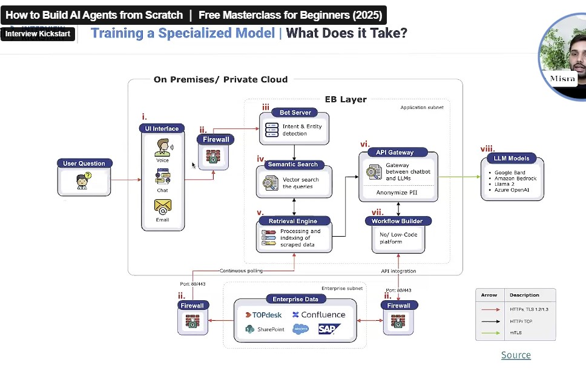
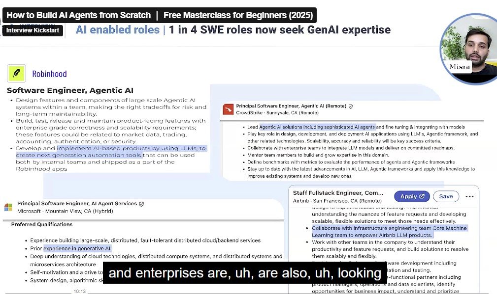
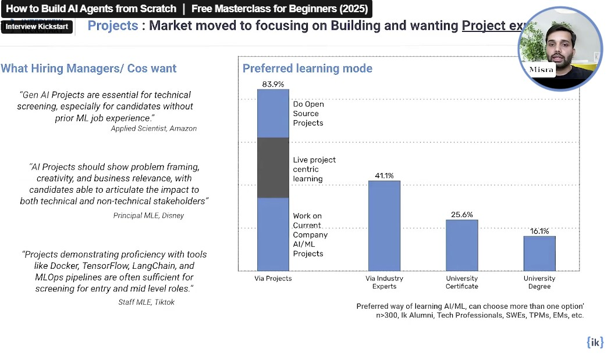

What is an Agent AI?

Agent AI refers to intelligent systems that perceive information, process it to understand context, and autonomously act to achieve specific objectives, adapting to changes in their environment.
- They can take action in response to data and also initiate actions proactively.
- They make decisions on their own to achieve goals, not just follow fixed instructions.
In short, agent AIs are designed to sense, reason, and act independently to accomplish tasks—even as things change around them.
Agentic AI: Technical Definition & Analogy
Technical Definition: Think of agentic AI agents as large language models (LLMs) equipped with a set of tools, operating in a reasoning-action loop. This allows agent AI systems to perform more complex functions than a standard ("vanilla") LLM.
Analogy: Imagine a generic AI as a skilled writer who can draft excellent content on any topic you provide. In contrast, an agent AI is like a personal assistant who not only writes, but also understands your goals and needs, and can take actions—like scheduling meetings, booking travel, or managing other tasks proactively.
- In the agent workflow, the agent takes feedback and revises its responses as needed. This feedback loop does not happen in every workflow.

How Agents Are Transforming Industries
AI agents are revolutionizing a wide range of industries by automating complex tasks, improving decision-making, and enabling new services. Here are some examples of how agentic AI is making an impact:
- Healthcare: Agents help with patient triage, appointment scheduling, and personalized health recommendations.
- Finance: Agents automate fraud detection, portfolio management, and customer support.
- Retail: Agents power personalized shopping assistants, inventory management, and dynamic pricing.
- Travel: Agents can book flights, manage itineraries, and provide real-time travel updates.
- Customer Service: Agents handle inquiries, resolve issues, and learn from interactions to improve over time.

What Does It Take to Build Such a System?

Here's what each part generally represents on the diagram:
- "User Question" (Left Side): This is you asking a question. It shows you can ask by Voice, Chat, or Email.
- "UI Interface" (Box 'i.'): This is where your question first arrives. It's the front door of the system, taking your voice, chat, or email and preparing it for the AI.
- "Firewall" (Boxes 'ii.'): These are like security guards. They protect the system from bad stuff and make sure only allowed information goes in and out. You see them at different points, showing security is important throughout.
- "Bot Server" (Box 'iii.'): This is the first "brain" of the system. It quickly tries to understand what you want (your "intent") and what key things you mentioned (the "entities"). For example, if you ask "What's my order status for order 123?", it knows you want "order status" and the "order number is 123."
- "Semantic Search" (Box 'iv.'): This is a super-smart search engine. Instead of just looking for keywords, it understands the meaning of your question. It then finds relevant information by comparing the meaning of your question to the meaning of all the data it has. It also makes sure to remove any sensitive personal details.
- "Retrieval Engine" (Box 'v.'): This is where all the company's knowledge is stored and organized. Think of it as a huge, well-indexed library of all the company's documents, policies, customer information, etc. It constantly updates itself by "Continuous polling" the "Enterprise Data" at the bottom.
- "Enterprise Data" (Bottom Section): This is the actual source of all the company's information – like customer support tickets (TOPDesk), internal documents (Confluence, SharePoint), or sales data (SAP). This is the "knowledge base" the AI refers to.
- "API Gateway" (Box 'vi.'): This is like a central post office. It handles all the communication between the system's "brains" and the outside world, especially when it needs to talk to the really powerful AI models.
- "Workflow Builder" (Box 'vii.'): This is where the rules and steps for answering questions are set up. It's like a recipe book for how the AI should combine information and interact with different parts to give you the best answer. It's often "No/Low Code," meaning you don't need to be a super programmer to set up these rules.
- "LLM Models" (Box 'viii.'): These are the "Big Brains" or "Large Language Models" that can generate human-like text. Once the system has all the relevant information, it sends it here, and these models create the actual reply for you. The diagram shows it can use different ones like Google Bard, Llama 2, or Azure OpenAI.
In essence, the diagram shows how your question travels through different smart stages: being understood, looking up information in the company's knowledge, and finally getting a well-thought-out answer generated by powerful AI. Security (firewalls) and continuous updates are built in throughout.
Below Are Some Sample Companies Looking for These Roles

